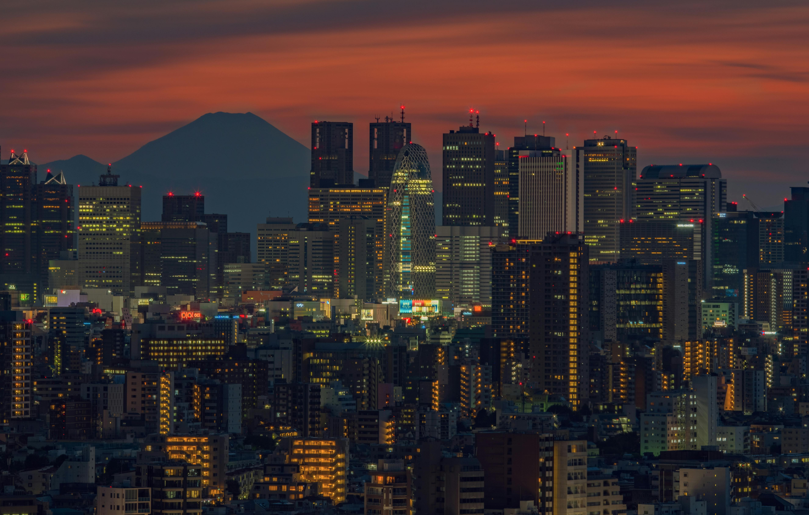
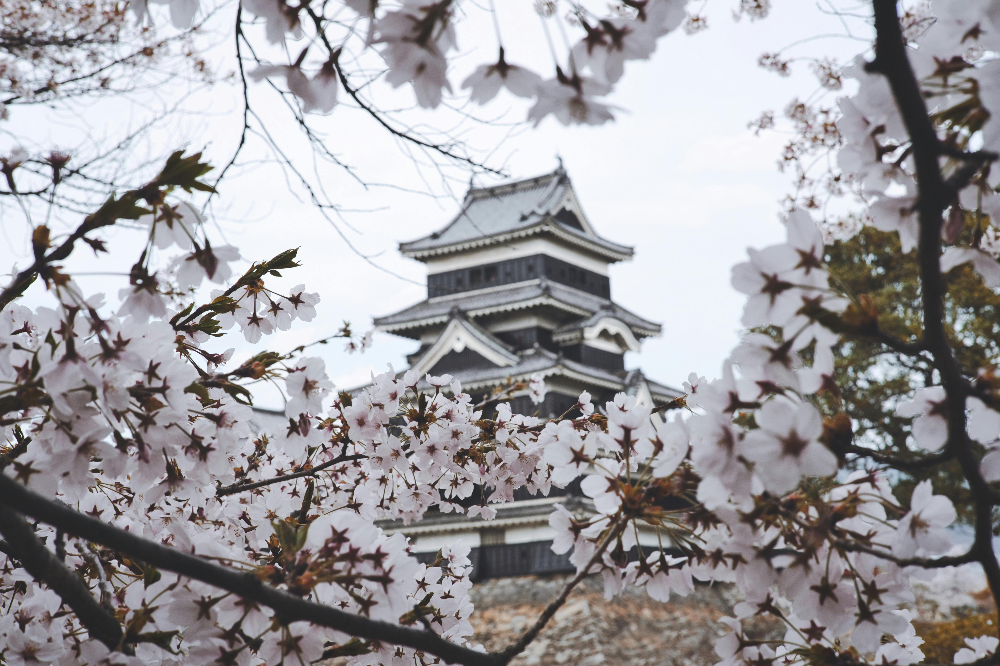
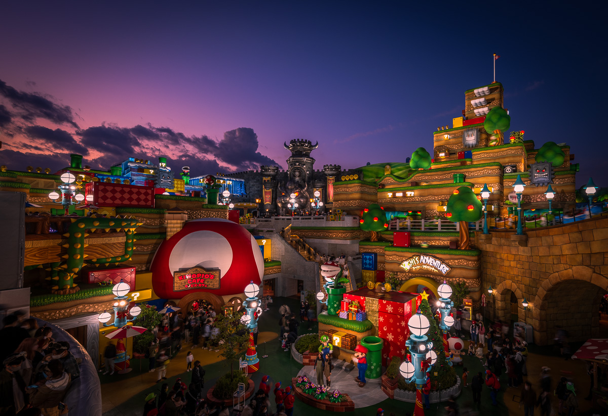

¿Quiénes somos?
Somos una agencia argentina especializada en viajes a Japón. Te llevamos a conocer la cultura nipona de forma única,
combinando lo tradicional con lo moderno. Ya sea que sueñes con recorrer templos ancestrales, vivir el florecer de los cerezos o perderte entre neones y tecnología, tenemos el viaje ideal para vos.
Tu historia japonesa empieza acá.
Ofertas destacadas
Tokio y Monte Fuji - 10 días de contraste y cultura
⛩️

Desde USD 3.200
Incluye vuelos, hospedaje 4★, excursión al Monte Fuji, pase JR de tren y city tour en Tokio.
Promo: 10% OFF si reservás antes del 15 de mayo + ¡noche de ramen tour gratis!
Para saber mas del paquete de viaje haga click aqui.
Sakura Tour - Florecer de los cerezos en Kyoto y Osaka
🌸

Desde USD 3.500
12 días en temporada de hanami.
Incluye guía local, templos icónicos, jardines y hospedaje tradicional ryokan.
Promo: 2x1 en excursión a Nara + regalo de yukata para fotos.
Para saber mas del paquete de viaje haga click aqui.
Japón Gamer - Tokio, Akihabara y Nintendo World
👾

Desde USD 3.800
9 días en las mecas del gaming japonés.
Incluye entradas, city pass y noche temática en hotel cápsula.
Promo: Entradas incluidas al Pokémon Center + acceso preferencial a Nintendo World.
Para saber mas del paquete de viaje haga click aqui.
¡Más destinos disponibles!
Viajes urbanos.
| Destino |
Duración del viaje |
Precio |
Temporada recomendada |
Descripción |
| Tokyo |
7 a 10 días |
Desde USD 2.800 |
Todo el año |
Explorá la capital más vibrante del mundo: tecnología, cultura pop y gastronomía de clase mundial. |
| Osaka |
5 a 8 días |
Desde USD 2.600 |
Primavera y otoño |
La ciudad de la comida callejera, con castillos imperiales y acceso fácil a Kyoto y Nara. |
| Actualizado: Abril 2025 |
Viajes de naturaleza y montaña.
| Destino |
Duración del viaje |
Precio |
Temporada recomendada |
Descripción |
| Hakone y Monte Fuji |
3 a 5 días
|
Desde USD 1.200 |
Otoño e invierno |
Aguas termales, paisajes montañosos y vistas imponentes del Fuji-san. |
| Takayama y Alpes Japoneses |
6 días |
Desde USD 2.100 |
Invierno y primavera |
Pueblos tradicionales entre montañas, ideal para relajarse y desconectarse. |
| Actualizado: Abril 2025 |
Viajes de playa y costa.
| Destino |
Duración del viaje |
Precio |
Tepmporada recomendada |
Descripción |
| Okinawa |
6 a 8 días |
Desde USD 2.900 |
Verano |
Playas paradisíacas, cultura única y una cara de Japón poco conocida. |
| Actualizado: Abril 2025 |
Viajes historicos y culturales.
| Destino |
Duración del viaje |
Precio |
Tepmporada recomendada |
Descripción |
| Kyoto |
5 a 7 días |
Desde USD 2.700 |
Primavera y otoño |
La joya del Japón tradicional: templos, geishas y jardines zen. |
| Nara |
1 a 2 días |
Desde USD 600 |
Todo el año |
Excursión desde Kyoto/Osaka. Ciervos sagrados, templos milenarios y una atmósfera mágica. |
| Actualizado: Abril 2025 |
¿Por qué elegirnos?
En Nihon Dreams, somos más que una agencia: somos tu puente hacia la cultura japonesa.
Nos destacamos por nuestra atención personalizada, itinerarios auténticos y experiencia real en el destino.
Ventajas
- ✔ Asesoramiento personalizado desde Argentina
- ✔ Guías bilingües con experiencia local
- ✔ Itinerarios flexibles y temáticos
- ✔ Acompañamiento en todo momento del viaje
- ✔ Promociones exclusivas y financiación en cuotas
Testimonios
"Inolvidable, fue como vivir un anime. Todo impecable y seguro." – Martina A.
"El sakura tour fue un sueño. Volvería mil veces. ¡Gracias Nihon Dreams!" – Rodrigo V.
"Nos sentimos acompañados desde Ezeiza hasta el último templo en Kyoto." – Laura y Germán S.